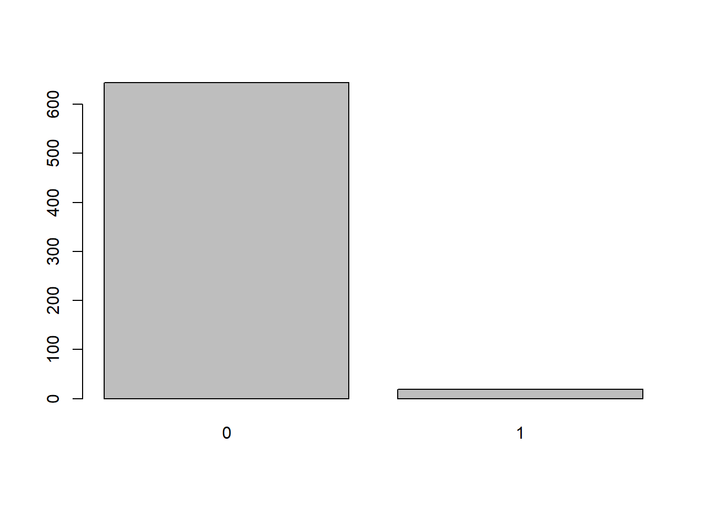
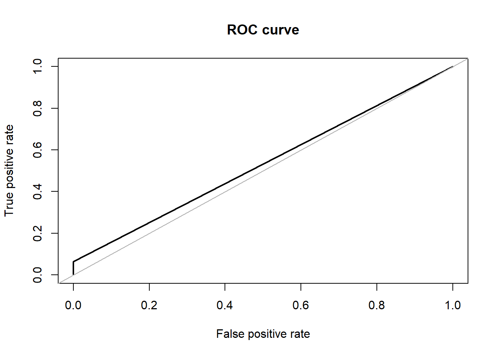
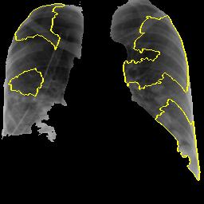
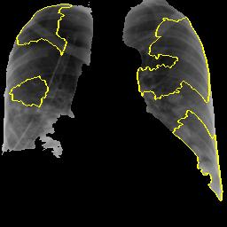

Results
SVM
We used Support Vector Classifiers with Radial Basis function as kernel. With the hyper-parameter tuning, we found value of cost = 1 and gamma = 0.5 to be optimal w.r.t our ground truth.
Library Imports
The CRAN packages e1071 for classification using Support Vector Classifiers with Radial Basis Function kernel and hyper-parameter tuning and ROSE for over-sampling of data are being used.
library(e1071)
library(ROSE)## Loaded ROSE 0.0-3Pre-Processing
## V1 V2 V3 V4
## Min. : 0 Min. : 0 Min. : 0 Min. : 0
## 1st Qu.:1095008 1st Qu.: 560166 1st Qu.: 24092 1st Qu.: 338044
## Median :1421973 Median : 860980 Median : 55360 Median : 594510
## Mean :1475117 Mean :1031130 Mean : 63767 Mean : 596393
## 3rd Qu.:1834942 3rd Qu.:1318568 3rd Qu.: 94668 3rd Qu.: 830550
## Max. :4446528 Max. :6340033 Max. :401556 Max. :2090907
## V5 V6 V7 V8
## Min. : 0 Min. : 0 Min. : 0 Min. : 0
## 1st Qu.: 37808 1st Qu.: 0 1st Qu.: 0 1st Qu.: 218172
## Median : 80880 Median : 27719 Median : 37098 Median : 435603
## Mean : 89719 Mean : 36925 Mean : 49901 Mean : 483330
## 3rd Qu.:131688 3rd Qu.: 57210 3rd Qu.: 77091 3rd Qu.: 670221
## Max. :328031 Max. :614955 Max. :370502 Max. :1814066
## V9 V10 V11 V12
## Min. : 0 Min. : 0 Min. : 0 Min. : 0
## 1st Qu.: 24325 1st Qu.: 0 1st Qu.: 0 1st Qu.: 0
## Median : 56706 Median : 0 Median : 0 Median : 24331
## Mean : 63292 Mean : 18742 Mean : 9109 Mean : 28857
## 3rd Qu.: 95504 3rd Qu.: 29095 3rd Qu.: 18166 3rd Qu.: 48344
## Max. :273870 Max. :155845 Max. :273028 Max. :468048
## V13 V14 V15 V16
## Min. : 0 Min. : 0 Min. : 0 Min. : 0
## 1st Qu.: 16351 1st Qu.: 0 1st Qu.: 0 1st Qu.: 67146
## Median : 41948 Median : 0 Median : 35977 Median : 159173
## Mean : 54049 Mean : 14207 Mean : 114882 Mean : 267047
## 3rd Qu.: 80607 3rd Qu.: 26228 3rd Qu.: 95132 3rd Qu.: 316470
## Max. :342023 Max. :132165 Max. :2684936 Max. :3409900
## V17 V18 V19 V20
## Min. : 0 Min. : 0 Min. : 0 Min. : 0
## 1st Qu.: 568440 1st Qu.: 159250 1st Qu.: 0 1st Qu.: 46640
## Median : 879072 Median : 286545 Median : 0 Median : 94060
## Mean :1025878 Mean : 465573 Mean : 19870 Mean :109127
## 3rd Qu.:1293583 3rd Qu.: 483375 3rd Qu.: 29920 3rd Qu.:152802
## Max. :5184326 Max. :14411810 Max. :153810 Max. :465584
## V21 V22 V23 V24
## Min. : 0 Min. : 0 Min. : 0 Min. : 0
## 1st Qu.: 0 1st Qu.: 0 1st Qu.: 0 1st Qu.: 29914
## Median : 27978 Median : 0 Median : 0 Median : 70002
## Mean : 36317 Mean : 21106 Mean : 15880 Mean : 75837
## 3rd Qu.: 54292 3rd Qu.: 29821 3rd Qu.: 26917 3rd Qu.:110559
## Max. :463822 Max. :633590 Max. :131336 Max. :285192
## V25 V26 V27 V28
## Min. : 0 Min. : 0 Min. : 0 Min. : 0
## 1st Qu.: 340509 1st Qu.: 43600 1st Qu.: 0 1st Qu.: 51126
## Median : 532350 Median : 88816 Median : 24752 Median : 98440
## Mean : 553534 Mean :101550 Mean : 29203 Mean :106956
## 3rd Qu.: 739025 3rd Qu.:149495 3rd Qu.: 47274 3rd Qu.:154510
## Max. :2264850 Max. :430668 Max. :468048 Max. :780080
## V29 V30 V31 V32
## Min. : 0 Min. : 0 Min. : 0 Min. : 0
## 1st Qu.: 237432 1st Qu.: 27988 1st Qu.: 82797 1st Qu.: 353073
## Median : 429495 Median : 64822 Median : 184686 Median : 540540
## Mean : 468205 Mean : 71144 Mean : 286418 Mean : 566503
## 3rd Qu.: 652132 3rd Qu.:103932 3rd Qu.: 333664 3rd Qu.: 714104
## Max. :1834487 Max. :401280 Max. :3035669 Max. :4494390
## V33 V34 V35 V36 V37
## Min. : 0 Min. : 0 Min. :0 Min. :0 Min. :0
## 1st Qu.: 35637 1st Qu.: 0 1st Qu.:0 1st Qu.:0 1st Qu.:0
## Median : 74452 Median : 32069 Median :0 Median :0 Median :0
## Mean : 85330 Mean : 32288 Mean :0 Mean :0 Mean :0
## 3rd Qu.:129440 3rd Qu.: 44749 3rd Qu.:0 3rd Qu.:0 3rd Qu.:0
## Max. :459918 Max. :211535 Max. :0 Max. :0 Max. :0
## V38 V39 V40 V41 V42 V43
## Min. :0 Min. :0 Min. :0 Min. :0 Min. :0 Min. :0
## 1st Qu.:0 1st Qu.:0 1st Qu.:0 1st Qu.:0 1st Qu.:0 1st Qu.:0
## Median :0 Median :0 Median :0 Median :0 Median :0 Median :0
## Mean :0 Mean :0 Mean :0 Mean :0 Mean :0 Mean :0
## 3rd Qu.:0 3rd Qu.:0 3rd Qu.:0 3rd Qu.:0 3rd Qu.:0 3rd Qu.:0
## Max. :0 Max. :0 Max. :0 Max. :0 Max. :0 Max. :0
## V44 V45 V46 V47 V48 V49
## Min. :0 Min. :0 Min. :0 Min. :0 Min. :0 Min. : 0
## 1st Qu.:0 1st Qu.:0 1st Qu.:0 1st Qu.:0 1st Qu.:0 1st Qu.: 207804
## Median :0 Median :0 Median :0 Median :0 Median :0 Median : 324270
## Mean :0 Mean :0 Mean :0 Mean :0 Mean :0 Mean : 356536
## 3rd Qu.:0 3rd Qu.:0 3rd Qu.:0 3rd Qu.:0 3rd Qu.:0 3rd Qu.: 476641
## Max. :0 Max. :0 Max. :0 Max. :0 Max. :0 Max. :1522620
## V50 V51 V52 V53 V54 V55
## Min. : 0 Min. :0 Min. :0 Min. :0 Min. :0 Min. :0
## 1st Qu.: 0 1st Qu.:0 1st Qu.:0 1st Qu.:0 1st Qu.:0 1st Qu.:0
## Median : 40735 Median :0 Median :0 Median :0 Median :0 Median :0
## Mean : 55231 Mean :0 Mean :0 Mean :0 Mean :0 Mean :0
## 3rd Qu.: 84624 3rd Qu.:0 3rd Qu.:0 3rd Qu.:0 3rd Qu.:0 3rd Qu.:0
## Max. :305350 Max. :0 Max. :0 Max. :0 Max. :0 Max. :0
## V56 V57 V58 V59
## Min. :0 Min. :0 Min. :0 Min. :0.0000
## 1st Qu.:0 1st Qu.:0 1st Qu.:0 1st Qu.:0.0000
## Median :0 Median :0 Median :0 Median :0.0000
## Mean :0 Mean :0 Mean :0 Mean :0.2384
## 3rd Qu.:0 3rd Qu.:0 3rd Qu.:0 3rd Qu.:0.0000
## Max. :0 Max. :0 Max. :0 Max. :1.0000## [1] TRUE##
## 0 1
## 650 653##
## 0 1
## 350 360Classification
set.seed(825)
#fitting the Support Vector Machine to the Training set
svm_fit_ovs <- svm(V59~., kernel = 'radial',
data = train_ov_sampled, scale=TRUE, cachesize = 200,
probability = TRUE, gamma = 0.5, cost = 1)## Warning in svm.default(x, y, scale = scale, ..., na.action = na.action):
## Variable(s) 'V35' and 'V36' and 'V37' and 'V38' and 'V39' and 'V40' and 'V41'
## and 'V42' and 'V43' and 'V44' and 'V45' and 'V46' and 'V47' and 'V48' and 'V51'
## and 'V52' and 'V53' and 'V54' and 'V55' and 'V56' and 'V57' and 'V58' constant.
## Cannot scale data.summary(svm_fit_ovs)##
## Call:
## svm(formula = V59 ~ ., data = train_ov_sampled, kernel = "radial",
## cachesize = 200, probability = TRUE, gamma = 0.5, cost = 1, scale = TRUE)
##
##
## Parameters:
## SVM-Type: C-classification
## SVM-Kernel: radial
## cost: 1
##
## Number of Support Vectors: 991
##
## ( 615 376 )
##
##
## Number of Classes: 2
##
## Levels:
## 0 1#Hyper-Parameter Tuning
# obj <- tune.svm(V59~., data = train_ov_sampled, sampling = "cross",
# gamma = 2^c(-1:4), cost = c(1:10))
# summary(obj)Prediction

## 0 1
## 694 16Evaluation
##
## Call:
## accuracy.meas(response = test_ov_sampled$V59, predicted = svm.pred.ovs)
##
## Examples are labelled as positive when predicted is greater than 0.5
##
## precision: 0.507
## recall: 1.000
## F: 0.336## Area under the curve (AUC): 0.522
## Confusion Matrix and Statistics
##
## Reference
## Prediction 0 1
## 0 350 344
## 1 0 16
##
## Accuracy : 0.5155
## 95% CI : (0.478, 0.5528)
## No Information Rate : 0.507
## P-Value [Acc > NIR] : 0.3399
##
## Kappa : 0.0438
##
## Mcnemar's Test P-Value : <2e-16
##
## Sensitivity : 0.04444
## Specificity : 1.00000
## Pos Pred Value : 1.00000
## Neg Pred Value : 0.50432
## Prevalence : 0.50704
## Detection Rate : 0.02254
## Detection Prevalence : 0.02254
## Balanced Accuracy : 0.52222
##
## 'Positive' Class : 1
## Explanations
Apart from prediction of positive and negative for Covid-19 cases from CXR images, we try providing an explanation of which areas of the image contributes towards the predicted results. Local interpretable model-agnostic explanations (LIME) [1] is a local surrogate model. That is instead of explaining the global prediction, it only explains the local prediction. Therefore once the predictions are available, the LIME model can be run, in hope that, the model finds the areas of the image that contributes most towards the prediction.
Given any(black box/transparent) model, the Lime model probes the model and gets the output any number of time(theoritically). Lime creates a data set consist of permutated samples of the images, and feed those images to the model and tries to predict what happens to the predictions for the permutated samples.
We initially ran our application, while feeding the whole image. However, as expected the areas where the lime model is trying to explain, is outside the intended region. For that reason, we give the model, the masked lungs image as input, while the other parts of the image is black. We thus, force the lime model to do any changes in the model on the intended area. This time, as expected the lime model focuses more on the parts of the lungs and thus gives a better performance.

 

Parameters and settings: As a part of preprocessing of the images to be fed to the lime model, we do greyscaling of the image. While no resizing is done, the image is processed so that the 1 channel greyscaled masked image is fed to the LIME model.
Number of features to find is set to 10.
Only “positive” areas are marked in the explanation image.
[1] M.T. Ribeiro, S. Singh, C. Guestrin, " Why should i trust you?" Explaining the predictions of any classifier, in: Proceedings of the 22nd Acm Sigkdd International Conference on Knowledge Discovery and Data Mining, 2016: pp. 1135–1144.